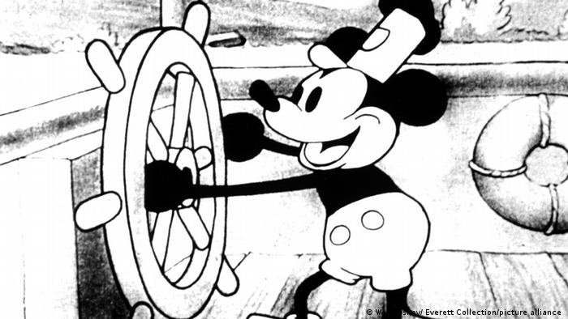
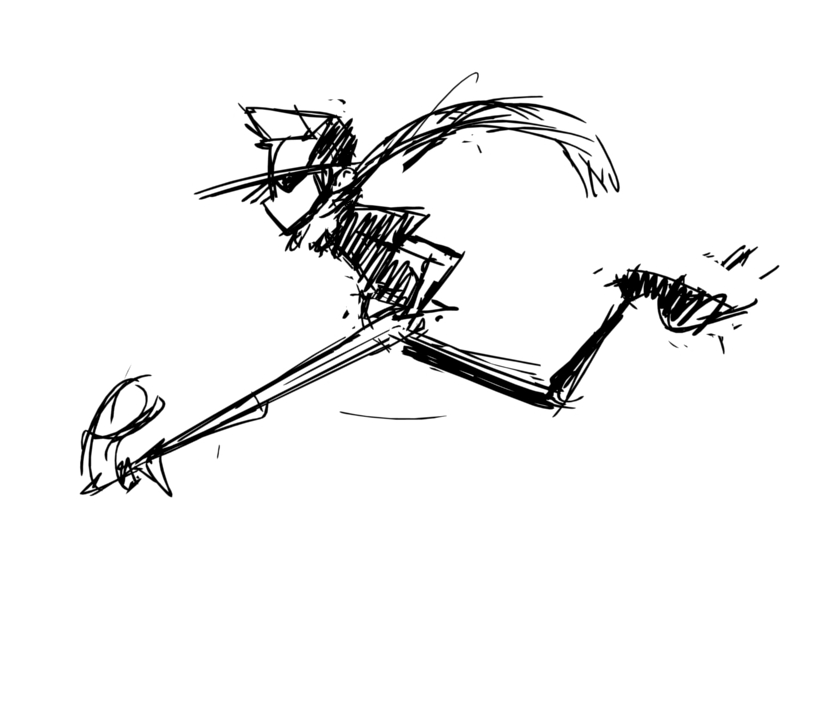

Kunst der Animation (Von Colin Güldeneck)
Enstehung
Die Animationsbranche wie wir sie kennen hat einen weiten Weg hinter sich ,denn Die Zeichentrickfilmindustrie
begann ungefähr nach dem ersten Weltkrieg so richtig,weil die Filmindustrie immer grösser wurde
mit grossen Firmennamen wie Warner.bros oder Walt disney studios wurde alles immer grösser.Man kann Walt
disney
in dem Fall noch besonders hoch heben ,weil er mit seinem Animationstudio sehr viel beigetragen hat. Er hat
mit
seinem Team zum Beispiel sehr viele Figuren erfunden welche wir heute immer noch kennen wie zum beispiel
Mickey
Mouse

Wenn sie mehr über Walt Disney
erfahren wollen klicken sie hier
Wie funktioniert eine Animation?
Eine Animation ist im Grunde nichts weiter als eine Ilusion welche dadurch entsteht das man viele Bilder schnell hintereinander abspielt.Das Gehirn nimmt diese Bilder wenn sie zu einander passen als eine Bewegung war. Damit eine Animation für den Verstand flüssig erscheint müssen mindestens 12 Bilder in einer Sekunde gezeigt werden ,der Fachbegriff dazu lautet Frames Per Second oder auch FPS. das hat ,aber leider zufolge das ein neunzig minütiger Zeichentrickfilm ungefähr 64.800 bilder haben muss.
können sie hier an der Darstellung sehen
Die Stock Motion Animation
Eine andere Art der Animation ist die Stock Motion Animation welche etwas anders funkzioniert.Denn in der Stock Motion Animation werden reale Gegenstände und figuren benutzt und von diesen Figuren macht man ein Foto und bewegt sie etwas und man macht dann noch ein Foto
Hier das Video erklärt es tausend mal besser
- rrrtttg ggg
- zweites Listenelement
- drittes Element
überschrift
- rrrtttg ggg
- zweites Listenelement
- drittes Element